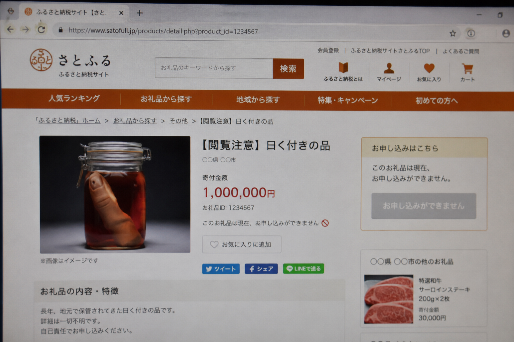

ふるさと納税を調べていたら、変なサイトにたどり着いた。 返礼品の中に「記憶の整理・保管サービス」がある。最初は冗談かと思った。でも読めば読むほど、何かがおかしい。誰か一緒に見てほしい。
もともと今年のふるさと納税を何にしようか調べていた。米や酒の定番ものを見ていたら、何かの拍子に「かたつま町」というところのサイトが出てきた。山間の小さな自治体らしく、サイトも普通のふるさと納税カタログに見えた。
ところが返礼品のカテゴリに「サービス・体験」というタブがあって、その中に「記憶の整理・保管サービス」とある。
……記憶を「採取」して「保管」する。
最初は脳ドックとか認知症予防のなにかかと思ったが、続きを読むと「基本プランでは採取済み記憶データの『別の保持者への移転』もオプションとして選択可能です」と書いてある。記憶を他人に移転？ 注意事項には「他者の記憶データを受け取られた場合、受け取り後しばらくすると、その記憶が自身のものと区別がつかなくなることがあります。これは仕様であり、異常ではありません」とある。
完全に意味がわからない。

さらに調べると、サイト内検索フォームで品目名を入れると詳細ページが開く仕組みになっているらしい。「記憶の整理・保管サービス」以外にも品目があるようで、ほかにも何かが公開されていないか試してみた。
見つけた品目名が「忘れていた夏」「あの人との時間」「未使用の幼少期」——。
「未使用の幼少期」って、何だ。
私は一通り読んだけれど、途中からよく分からなくなってきた。このサイトは何を売っているのか。「記憶管理担当課」というのはどういう組織なのか。「記憶管理条例」というものが実在するらしい。そしてサイト内のどこかに内部管理システムに通じる経路があるらしいことに気づいた——ただ、そこから先に入る方法が私にはわからなかった。
私はこういう調査に向いていないと思う。読み込むほど頭が混乱してきて、どこから手をつけるべきか分からなくなる。でも、このサイトは何かある気がしている。
昭和40年に何かがあったらしい。312人という数字が出てくる。「なにもなかった3日間」という言葉がある。
これが本当に架空のサービスサイトなのか、あるいは——何か別のものなのか。詳しい人や、こういうのが好きな人に渡したほうがいいと思って、ここに書いておく。
サイトはここ。
※ 検索フォームで品目名を入れるといろいろ出てくる。「なにもなかった3日間」という言葉もどこかに書いてあった。